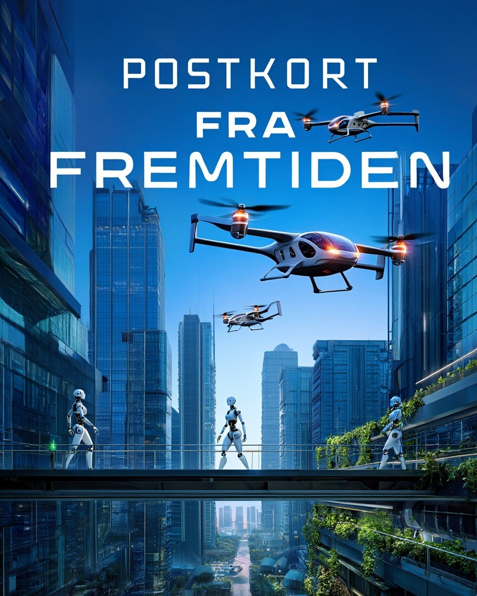

Postkort fra fremtiden
Boken bygger på det samme arbeidet som notatene. Audun Wickstrand Iversen og Leo Rundgren Olsen beskriver fire teknologier som de mener vil endre hverdagen og økonomien vår. Det er humanoide roboter, AI-agenter, stemmeteknologi og selvkjørende kjøretøy.
Underveis kommer 14 postkort fra 2032, skrevet av fremtidige utgaver av kjente nordmenn.

- Audun Wickstrand Iversen og Leo Rundgren Olsen
- Hegnar Media
- Utgitt 2026